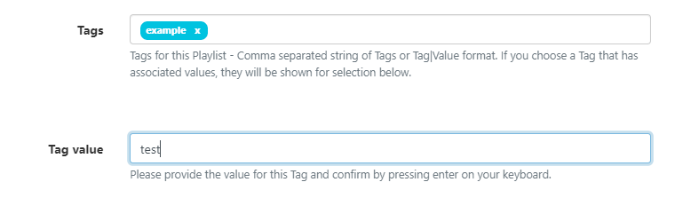

Tag Management
Tags can be assigned to Layouts, Campaigns, Templates, Playlists, Media and Displays/ Display Groups in order to bring about organisation and structure within the CMS.
Feature Overview:
- Used throughout the CMS.
- Easier searches by narrowing down results.
- Set values to be associated with a Tag.
- Make values a ‘Required Value’ in order to Save.
- Dedicated Tags page for easier management.
Tags can be created by Users from various Forms throughout the CMS. These can be managed by Administrators from the Tags page under the Administration section of the main CMS menu:

Additional filter options can be applied to only view System Tags and Tags with associated Values!
When adding Tags you can optionally create a Tag value to be associated with the Tag.
- Free type the Tag Value to be used with the Tag:

- Click enter on your keyboard to confirm.
The Tag field will update to show the Tag|Value

The next time this Tag is entered the associated Value will be shown for selection.
Tags can have a Required Value enabled so that a Value must be selected in order for a User to save the form.
- Enable from the row menu for a selected Tag and click Edit.
You can also provide filter options to exclude items with specific tags from searches:
- Enter
-Tagto exclude the tag from search results. - Enter
-|Valueto exclude the value from search results. - Enter
-Tag|Valueto exclude both tag and value from search results.
You can have a comma separated mix of all the above!
- If you want to show all items that have not got a tag then enter
--no-tag
Edit/Delete Tags
From the Tags page use the row Menu for a selected Tag to Edit or Delete.
- Select Edit to rename, set associated Values and enable/disable the Required Value function.
Tags can be deleted individually or removed in bulk:
- Click rows to select which Tags you wish to delete and use the With Selected drop down at the bottom of the grid
- Select Delete.
Assigning Tags
As soon as you start entering text in the Tag field, an auto-complete helper will show possible matches to make it easier for Users to see what Tags are available to select from.
To enter a Tag, start typing in the Tag field and pick from the list or click out of the box when you are done.
- You can see in the image below that the
colourTag already has associated values ofRed, Green and Blueshown as Tag values to select from.

If the Tag Value is already known then this can also be typed in the field using the Tag|Value format.
Users can add an associated value to a Tag without an existing predefined value using the Tag Value field. Enter the Value you wish to associate with the Tag in the Tag value field and click enter. If you do not wish to enter a Tag value, then this field can be left blank.
Tags can also be assigned to multiple objects using the With Selected option on multiple pages throughout the CMS.
When exporting a Layout the Layout Tag will also be exported. Select the Import Tags option to add the Tag on Layout import if required.